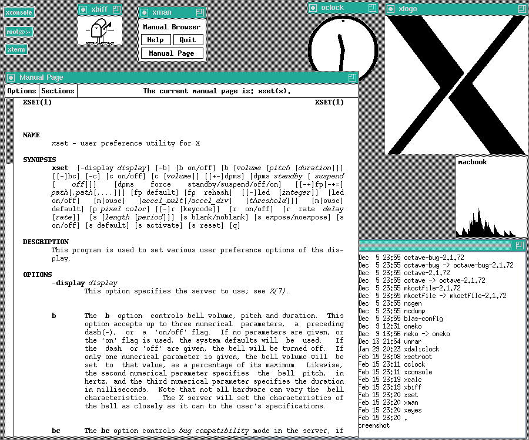
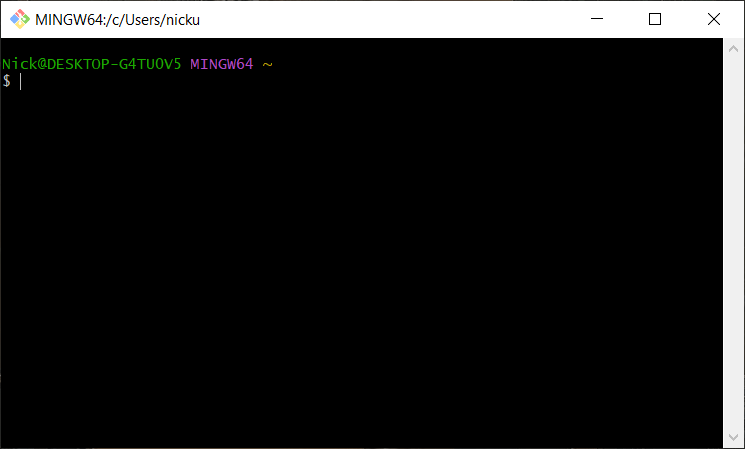
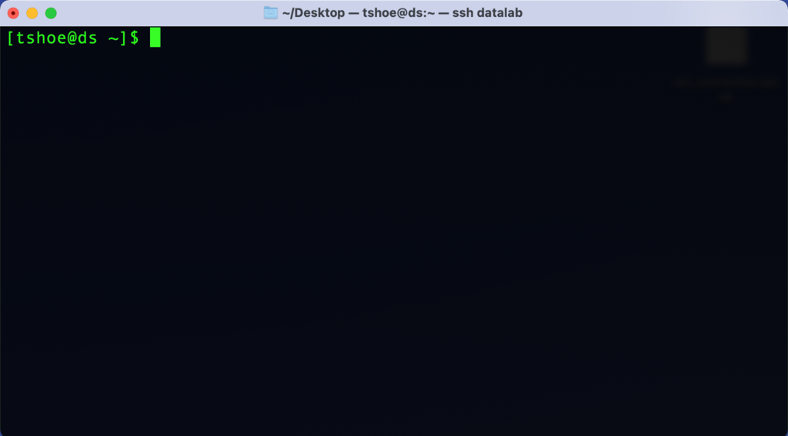
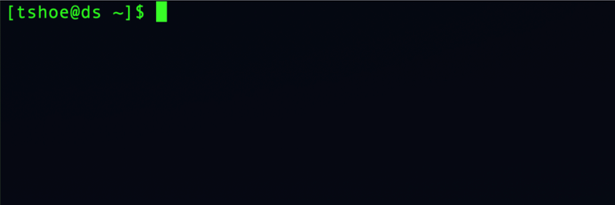

1. Interacting with Computers#
Learning Goals
After this lesson, you should be able to:
Explain what a graphical user interface is
Explain what a command line interface is
Describe the components of a command line interface
Explain what a prompt is
Open a terminal
1.1. Computer Interfaces#
Most people interact with their computer through a graphical user interface (GUI), which allows them to use a mouse, keyboard, and graphical elements on screen (such as file menus, pictures of folders and files, etc.) as they do their work. We tend to conflate operating systems (such as Windows and macOS) and their GUIs, because software publishers pack these two things together as a convenience to users. But the operating system that makes your computer work and the interface that you use to interact with it are, in fact, completely different and separable software systems. It’s possible to use other methods/software to interact with your computer besides the stock GUI that launches automatically when you turn it on.

Fig. 1.3 The X Window System, a graphical user interface first released in 1984, with several windows open, including a command line interface. Image from Wikipedia.#
#/media/File:X-Window-System.png){kind=link}
One such method, the command line interface (CLI), offers a text-only means of interacting with your computer. The CLI acts somewhat like a typewriter rather than a desktop with windows (as the prevailing metaphors for GUIs go). You can think of this interface as having two main parts:
A terminal: a window (or originally, a teleprinter) with which to send/receive text to/from a computer.
A shell: a program that interprets and executes commands you type into the terminal (common shells include Bash, Fish, and Zsh).
The command line or prompt is the line in the terminal where you’ll type in commands for the shell to interpret and execute.
In the early days of computing, all user interaction with computers happened at the command line. But during the 1980s, computer manufacturers—with Apple at the lead—made a big push to convert their machines to the windowing systems we know today. A CLI, they felt, was too difficult for users to understand, and this, in turn, would hamper computer sales. Nowadays almost all operating systems have a GUI as the default interface. On Windows and macOS, people are by and large locked into the GUI that comes with the operating system (on Linux, this is generally not the case). Nevertheless, these operating systems also all have some kind of built-in CLI and allow others to be installed.
1.1.1. Why Use the CLI?#
Work you do at the CLI is relatively easy to record and reproduce, because CLI commands are just text. You can write down (or copy and paste) the exact commands you entered to create an unambiguous history. Later, if you’re unsure of how you got to a particular result, you can review the history or even re-run parts of it. Be a good collaborator for future you.
From a transparency perspective, having a history of computations is critical. It enables others to reproduce, assess, and verify your results. Think of the history as showing your work when your work involves a computer. This is a key component of conducting reproducible research, but is also valued outside of research contexts.
Solving real-world problems sometimes requires computers that are larger and more powerful than a consumer-grade workstation. These high-performance computing systems do not necessarily have GUIs. Familiarity with the CLI makes it easier to get started with them.
To the Command Line: A Mentality Shift
The following sections and chapters are a hands-on introduction to the CLI. They explain how to open the CLI and cover a host of different commands that will help you in your day-to-day work on a computer. That said, knowing the pragmatics of using the CLI is only one part of a broader change of mentality in interacting with computers that we hope to instill.
In order to use the CLI effectively, you’ll need to understand more about how computers work than you would if you only used a GUI. As such, we’ll cover several concepts and conventions in computing that generalize beyond the CLI. Thus learning this material is in part about preparing yourself to learn more advanced computing skills in the future, such as tracking changes to files with version control and writing code.
1.2. Command Line Basics#
Important
To follow along with this section and subsequent chapters, you’ll need a compatible terminal (and shell).
Open a terminal by following the instructions for your computer’s operating system:
Git Bash is the terminal we recommend on Windows. It is not built into Windows, so you have to install it yourself. The Setup chapter provides instructions.
To launch Git Bash, open the start menu and search for “Git Bash” or
select Programs -> Git Bash.
When the Git Bash opens, it will look something like this:

Fig. 1.4 Git Bash on Windows.#
The built-in Terminal application is what we recommend on macOS.
To launch Terminal, select Applications -> Utilities -> Terminal.
When the Terminal app opens, it will look something like this:

Fig. 1.5 The Terminal app on macOS.#
Many different terminals are available for Linux. Any are likely okay for this workshop, but the examples were only tested in WezTerm.
While the command line can look intimidating to those raised on a GUI, it’s important to know that it is nevertheless an interface in the same way that your computer’s default windowing system is an interface. That is, even though a CLI is something of a bare-bones representation of your computer, it too relies on a series of assumptions and metaphors that serve to frame how you interact with your computer. Using the CLI may feel strange at first, but part of that feeling comes from not being acclimated to the way it represents a computer.
Instead of conveying information through graphics, as in a GUI, the CLI does so through lines of text. Take a look at the terminal you just opened. It probably won’t be exactly the same due to differences between operating systems and terminal programs, but it should look something like this:

Everything that will happen in this window happens on a line-by-line basis. As soon as you opened the terminal, the shell started running and printed out a line of text.
The beginning of the line shows the names of the current user (tshoe) and
current computer (ds), with an @ in between. On your screen, these will
likely be different. This information may seem redundant, but with the CLI,
it’s possible to interact with remote computers via a network, so it can be
helpful to have this displayed as a reference point.
The middle of the line shows some additional status information (~), which
you’ll learn about in the next chapter.
The end of the line shows a dollar sign ($). This is an indicator to let you
know that this is a command line (or prompt) where you can type in a command.
The shell will not print or do anything else until you type in a command.
Depending on your computer’s terminal, you may or may not also see a box after
the prompt character. This indicates where the cursor is in the terminal, which
is helpful if you want to edit a command. In the CLI, you can’t click the mouse
to move the cursor. Instead, you’ll have to use your computer’s Left and
Right arrow keys.
Caution
You do not need to type $. It will appear automatically.
Examples online sometimes include $ at the beginning of commands to mimic
what you’ll see onscreen. We do not include the $ at the beginning of any
commands in this reader.
You can run, enter, or execute, a command in the terminal by typing the
command’s name—followed by any additional information the command
requires—and then pressing Enter or Return on your keyboard.
For example, the echo command prints text to the screen. It literally
echoes your text:
echo Hello world!
Hello world!
When you enter a command, your computer’s shell program interprets and runs the command, prints any output from the command to the terminal, and finally prints a new command line prompt.